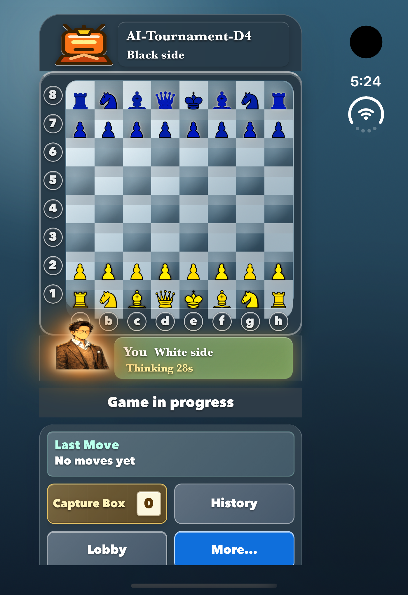
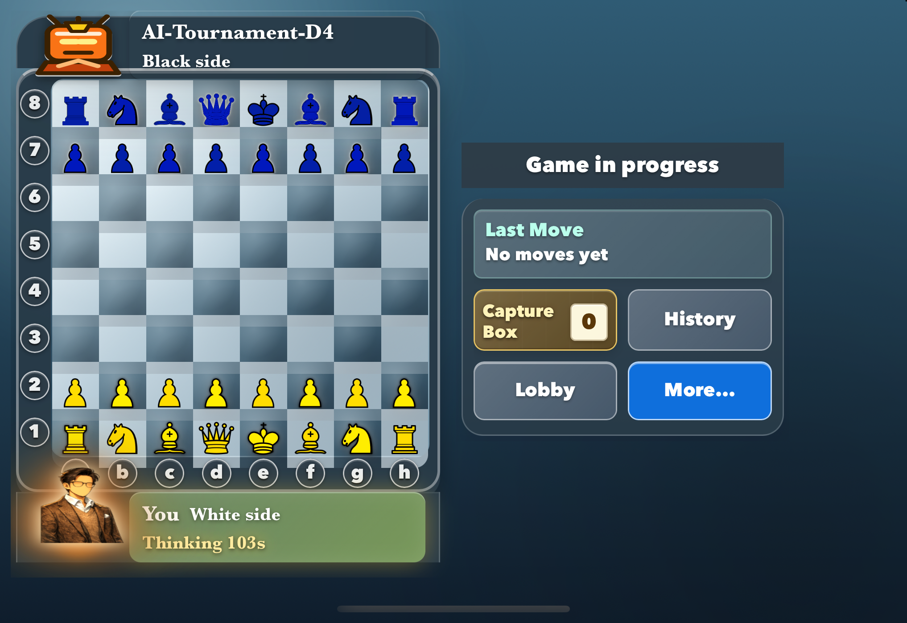
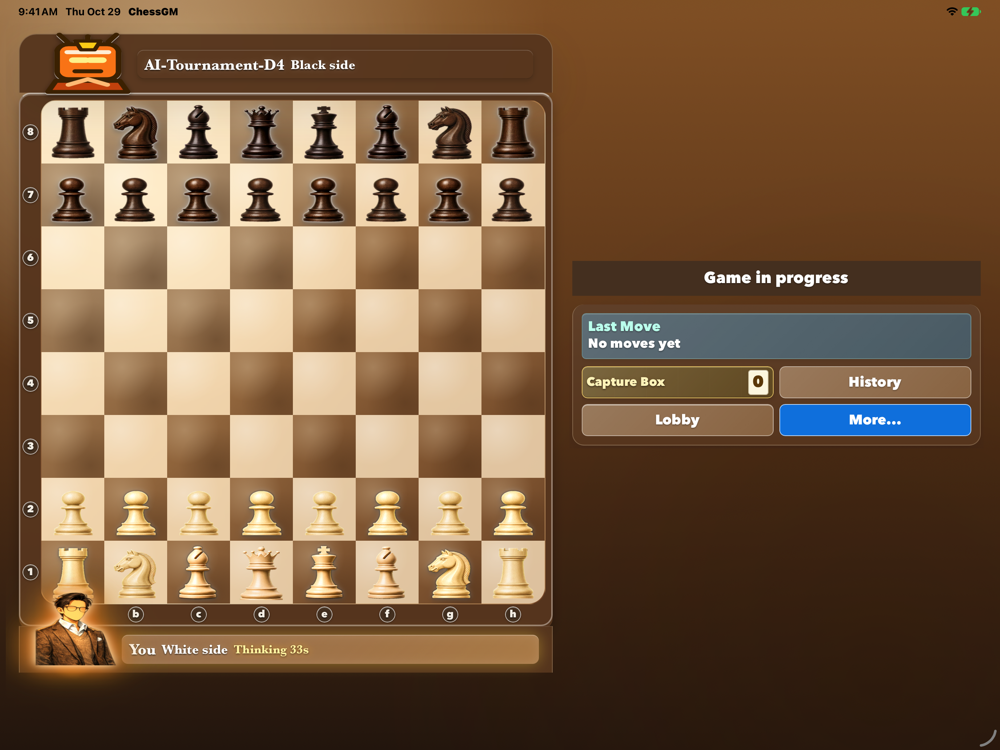

Contact Support
Email:
About This Release
Chess Grandmaster AI version 1.3 is an offline chess practice, review, and study app. Play against the built-in chess engine or watch engines play automatically. No account is required for normal gameplay.
What's New in Version 1.3
- Landscape play on iPhone, iPad, and iPhone Duo, folded or unfolded.
- Larger portrait boards, clearer Last Move details, and Recent Moves when space permits.
- Game Review with responsive board, readable analysis, and move navigation.
- Plus Unlock adds Club, Tournament, and Master AI and selected appearance choices.
- Premium includes everything in Plus, plus Grandmaster, Maximum, Game Review, and all remaining appearance choices.
- Settings includes Help & Support, privacy and update links, and version/build information.
The built-in engine is designed for offline practice and study. Its suggestions and review labels are not guaranteed perfect tournament play.
Version 1.3
Layouts that adapt as you play
Portrait and landscape layouts make better use of the available screen. iPhone Duo supports folded and unfolded views, while iPad keeps the board and controls comfortably arranged.






Screens are captured from the app on device or simulator. Layout and available space vary by device, display settings and window size.
Basic, Plus, and Premium
Basic includes Beginner AI, Classic Gent, Classic Wood, and Classic Art. Plus Unlock adds Club, Tournament, and Master AI and selected avatars, board themes, and pieces. Premium Unlock includes everything in Plus, plus Grandmaster and Maximum AI, Game Review, deeper search options, and all remaining appearance choices. Plus and Premium are independent, one-time, non-consumable purchases, not subscriptions. You do not need to buy Plus first. Buying Premium after Plus does not automatically credit or prorate the Plus purchase. Prices are shown in your local store. Restore Purchases is available in the app.
How do I purchase Plus or Premium Unlock?
- Tap Play or Watch to open Launch Pad, or open Settings.
- Select a locked AI strength or appearance choice to open the tier comparison.
- Choose Plus Unlock or Premium Unlock, check the localized price, and complete the purchase through your app store.
How do I restore a previous purchase?
- Open the Plus & Premium comparison screen.
- Select Restore or Restore Purchases.
- Use the same store account that originally purchased Plus or Premium Unlock and make sure the device is online.
Restoring is useful after reinstalling the app or moving to another supported device. Each unlock is associated with the store account and platform where it was purchased; Apple and Google purchases do not transfer between stores.
What if my purchase or restoration does not complete?
Confirm that the device is online, that you are signed in with the original store account, and that purchases are allowed on the device. Restart the app and try Restore Purchases again. If the problem continues, contact support and include the device type and a description of what happened. Do not send payment-card details or account passwords.
How to Start a Game
- Open Chess Grandmaster AI.
- Tap Play or Watch to open Launch Pad.
- Select AI Strength and available options.
- Tap Start game.
Frequently Asked Questions
How do I use landscape layouts?
Rotate your iPhone or iPad to landscape. On iPhone Duo, fold, unfold, or rotate the device to adapt the layout. If rotation is unavailable, check Portrait Orientation Lock in Control Center. Recent Moves appear in portrait when space permits.
How do I check for updates or contact support in the app?
Open Settings and expand Help & Support for the guide, Support & contact, Privacy policy, and Check for updates. The About card shows your installed version and build. Install updates without deleting the app to retain local games and settings.
Can I play offline?
Yes. Version 1.3 games and Premium Game Review run locally on this device. An internet connection is needed for store actions such as purchasing or restoring Plus or Premium Unlock, or when you choose to open an external support or update page.
How do I review a completed game?
At the game result, choose Review Game. Move-by-move Game Review analysis and the full-game analysis and summary require Premium Unlock. The first review analyzes the game locally and may take some time; a completed cached review opens faster later. Move History during play and basic result details are available without Premium.
What does Insufficient depth mean?
The bounded local search did not verify enough of that position to assign a confident move-quality label. It does not mean that the move was necessarily good or bad.
Can I cancel Game Review?
Yes. Choose Cancel while analysis is running. Your completed game and its played moves are not changed.
What is in a Review Diagnostic export?
It contains the reviewed game's moves, positions, engine settings, search results, and timing details. It is created locally and leaves the device only when you choose Copy or Export File.
Why can Game Review or stronger AI take longer?
Complex positions and higher depth settings require more local calculation. Analysis time varies by game length, position, depth, and device performance.
Do I need an account?
No. Accounts are not required for this release.
Does this release include live online play?
No. Version 1.3 does not enable live play, chat, player queues, accounts, or player-to-player challenges.
Where do I change board themes or pieces?
Open Menu, then Settings. Theme, piece style, avatars, music, sounds, and timers can be adjusted there. Basic includes the classic appearance choices; Plus and Premium unlock additional choices according to the tiers above.
Will updating change my saved appearance?
Appearance choices follow your active tier. A saved choice outside your tier returns to a Basic classic choice until the required purchase is restored or completed. Existing Premium ownership includes all appearance choices.
Does the app show ads?
No. Version 1.3 does not include advertising.
App Information
- App Name: Chess Grandmaster AI
- Version: 1.3
- Provider: Dhana Angdembey
 About Chess Grandmaster AI
About Chess Grandmaster AI
Created and developed by Dhana Angdembey.
© 2026 Dhana Angdembey. All rights reserved.
Support: angdembey.dra@gmail.com
Chess Grandmaster AI · Version 1.3